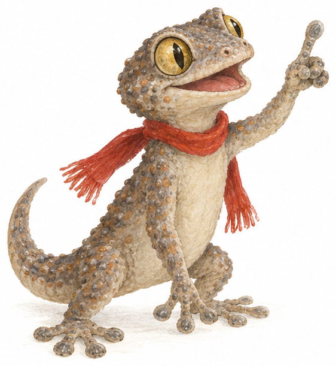

4.1 · O Aviso
Antes do pano · Educação literária
Antes de subir o pano
Um texto dramático é escrito para ser representado num palco. Não há narrador: são as personagens que falam, e o autor junta indicações sobre o que elas fazem. Antes de leres a peça, espreita o programa do espetáculo.
1{{KEY:bronze}}
Quem entra em cena?
AnteciparEsta é a lista de personagens da peça Duas Cenas: O Aviso.
 D. Guilherminaguardiã do Gabinete
D. Guilherminaguardiã do Gabinete Sr. Anselmoo faz-tudo do Gabinete
Sr. Anselmoo faz-tudo do Gabinete Beatriz10 anos, lê tudo até ao fim
Beatriz10 anos, lê tudo até ao fim Lucas10 anos, tem sempre pressa
Lucas10 anos, tem sempre pressa Mourinhauma osga (não fala)
Mourinhauma osga (não fala)- Quantas personagens tem a peça? Qual delas não diz uma única palavra?
- Já conheces algumas destas personagens da Unidade 1. Quais? Onde achas que a peça se vai passar?
2{{KEY:prata}}
O aviso escondido
PreverAVISO AO GRUPO DE TEATRO
SÁBADO NÃO
HÁ ENSAIO
HÁ ENSAIO

O aviso está pendurado à porta da Sala Grande. Mas uma osga instalou-se mesmo em cima da parte de baixo…
- O que se consegue ler? Que notícia parece dar o aviso?
- O que poderá estar escrito debaixo da osga? Escreve duas hipóteses.
- Que problema pode causar um aviso lido só até meio?
Depois de leres a peça, confirma:acerteiem parteenganei-me
Palavras dos bastidores
ensaio — repetição da peça, antes de a apresentar ao público.
estreia — a primeira vez que a peça é apresentada ao público.
pano — a cortina do palco. «Sobe o pano»: começa o espetáculo.
fato — roupa que o ator veste para fazer de personagem.
plateia — o lugar onde se senta o público; o próprio público.
faz-tudo — pessoa que arranja, limpa e trata de tudo um pouco.